An Ultimate GopherLabs
Hands-on Labs
funcs, func expressions, closure, returning funcs, recursion, the stack
• Docker Community Leader , Bangalore
• Author :- lightweight Kubernetes with k3s
with packt Publication
• Gopherlabs – 500+ tutorials
• Okteto – Kubernetes For Developer , Bangalore
Meetup Organizer
Who Am I?
@BiradarSangam
Sangam Biradar
EngineITops.com

● function
● functions in go are types
○ functions behave as types in go
○ use like any other type
■ declare them as variables
■ pass functions around just as you'd pass types around
■ pass functions just like any other argument / parameter
● pass them into functions as arguments
● return them from functions
■ declare functions inside other functions
○ similar to JavaScript
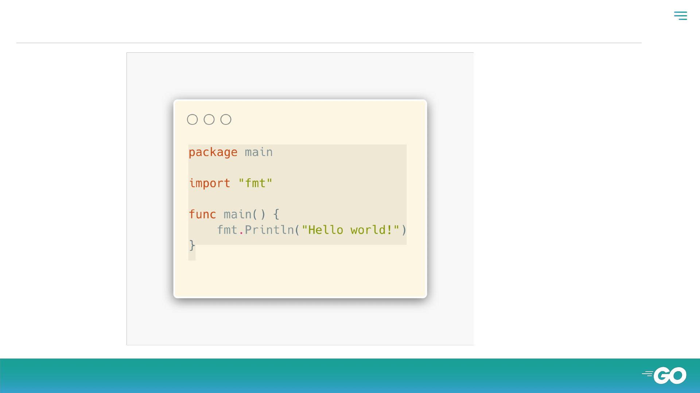
● func main – the entry to your program

● Exercise
Write a function which takes an integer and returns two values:
● the integer divided by 2
● whether or not the integer is even (true, false)
For example
● half(1) should return (0, false)
● half(2) should return (1, true).
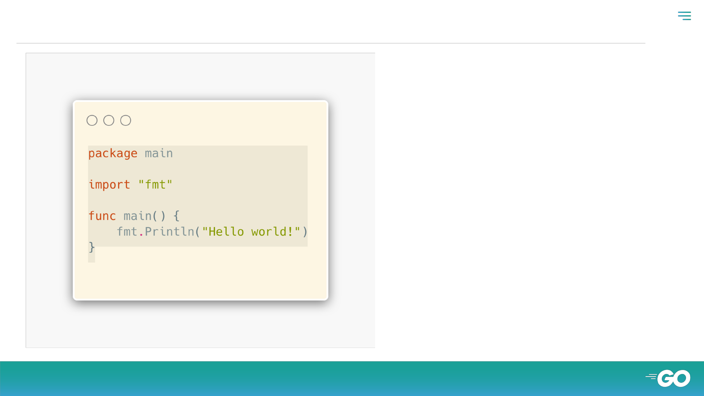
● func expression - setting a variable equal to a function
this is not a func expression
this is our code before using a func expression

● Closure
my definition: “one thing enclosing another thing”
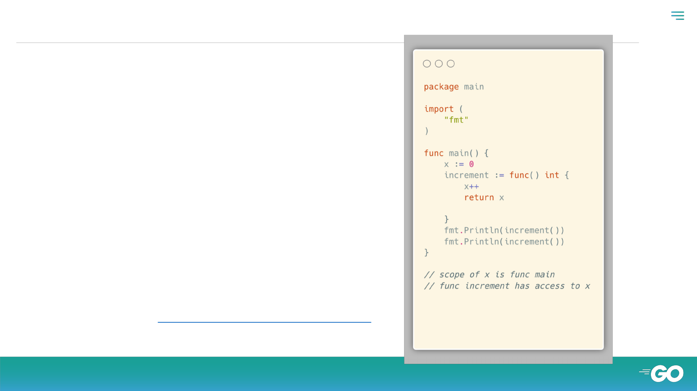
● closure
https://play.golang.org/p/p3kWmzBrLcx
closure
func main encloses func increment
closure helps us limit the scope of variables that are used by
multiple functions
without closure, for two or more funcs to have access to the
same variable, that variable would need to be package scope
func main is enclosing increment; increment is enclosing x
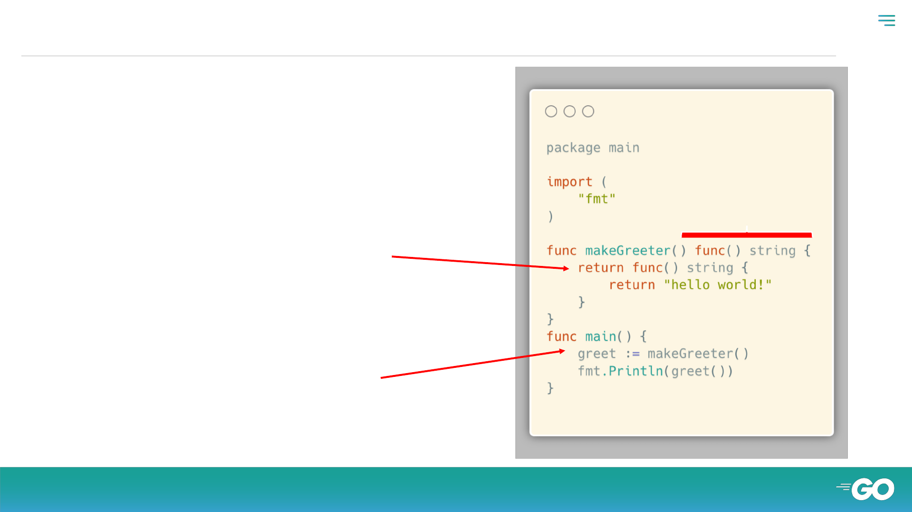
another func expression
setting a variable equal to a func
returning a func
(not part of func expression)
a func is returned
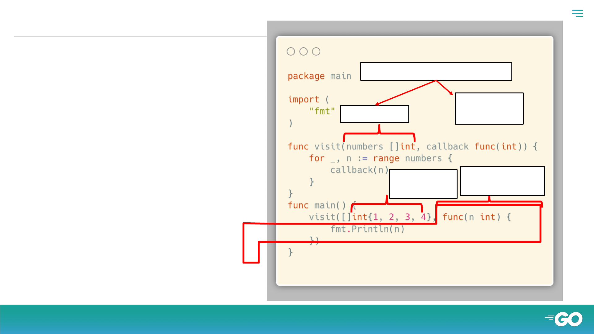
●
pass in a
func
the callback
func visit takes two arguments
a slice of ints
another func
the callback
pass in the
slice of ints
pass in a func
the callback
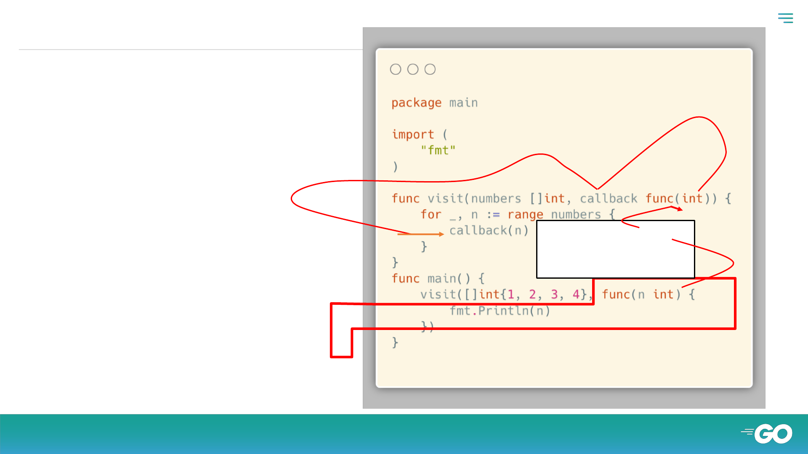
● How its work …
the func passed as an argument
(the callback) is assigned to the
parameter “callback”
and then gets used
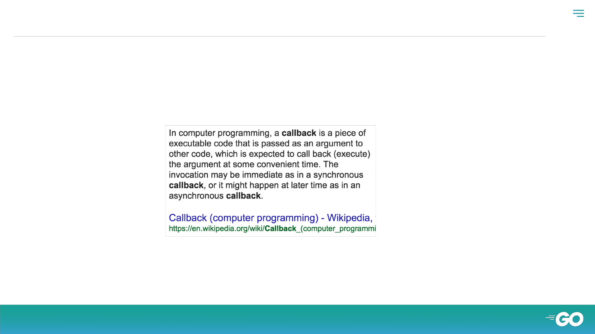
wikipedia’s description
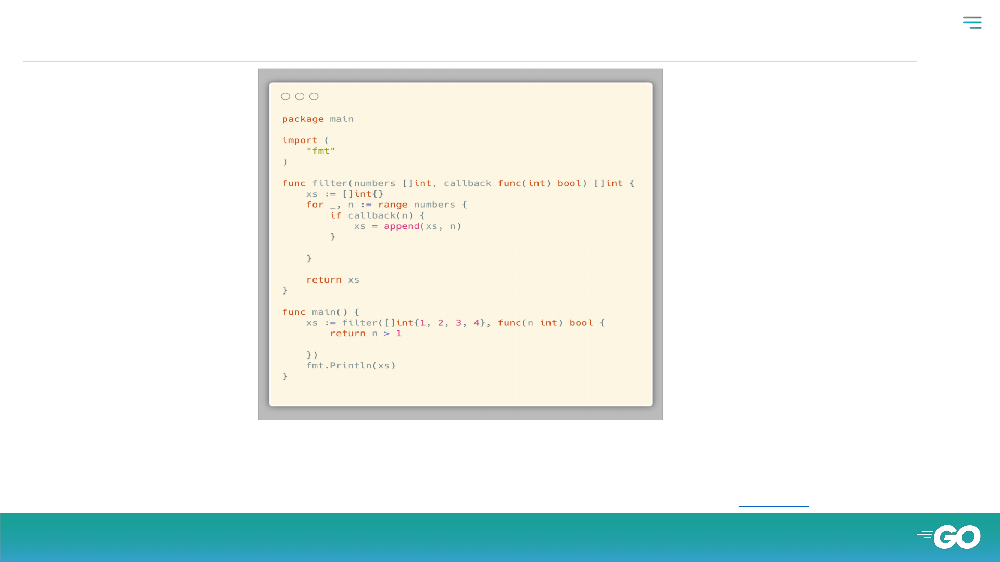
● another callback
“If you’ve done functional programming like Lisp or Haskell, this way of dealing with functions is super common; it’s an
approach to development; you get used to passing functions around. Go allows you to do that [passing functions around]
but it’s not the most common way of writing code. The more normal way you’d write code [for something like the code
above] would just be a simple for loop. For loops are easy to understand.”
~ Caleb Doxsey
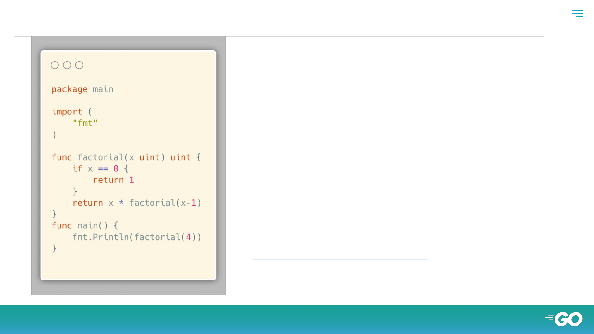
● recursion - a func that can call itself
● factorial(4)
○ returns: 4 * factorial(3)
● factorial(3)
○ returns: 3 * factorial(2)
● factorial(2)
○ returns: 2 * factorial(1)
● factorial(1)
○ returns: 1 * factorial(0)
● factorial(0)
○ returns: 1
----------------------------------------------------
returns: 4 * 3 * 2 * 1 * 1
----------------------------------------------------
The End Result:
● 4 * 3 * 2 * 1
https://play.golang.org/p/ZG03lKqaipD

● recursion
● You can always use loops to solve any problem that
can be solved with recursion.
● Loops are more performant than recursion.
This is called the base case
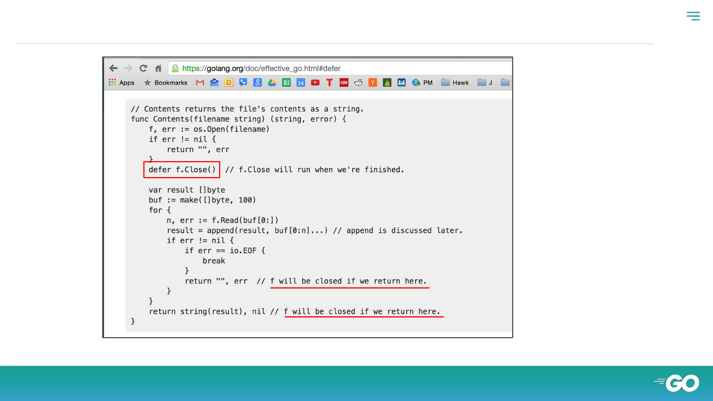
●
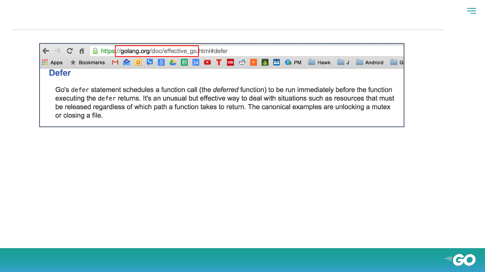
● defer doc
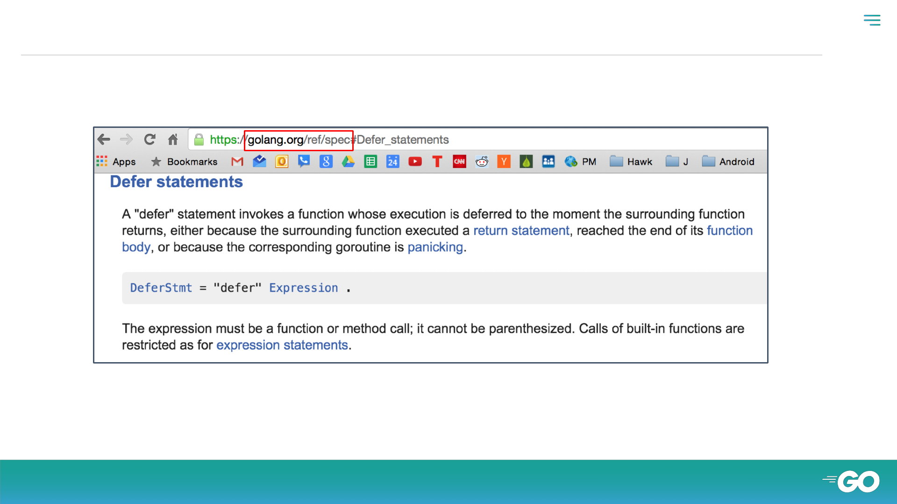
● Defer statements

Review
● func main() {}
● calling a function
● greeting()
● parameters vs arguments
○ two params
○ variadic
■ …params
■ args...
● returns
○ named returns
○ multiple returns
● variable shadowing
● func expression
○ setting a variable equal to a function
○ greeting := func(){<code here>}
■ greeting’s type is func
● closure
○ one thing enclosing another
○ helps us limit scope of variables
● returning a func
○ functional programming
● callback
○ passing a func as an argument
● recursion
● defer
● the stack
○ the order in which functions are
called

Thanks!
Any questions?
@sangambiradar@BiradarSangam
Sangam Biradar